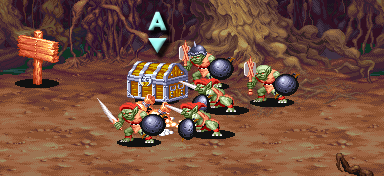

| STAGE 7 The grove of destruction |
| 파괴의 숲 |
| (일어판 - 魔獸が住む森 : 마수가 사는 숲) |
스테이지 자체는 좁다.
디스플레이서 비스트도 그 자체는 그다지 어렵지는 않지만
고블린이 아주 짜증을 유발시키는 곳 이다.
디스플레이서 비스트도 그 자체는 그다지 어렵지는 않지만
고블린이 아주 짜증을 유발시키는 곳 이다.
전반부 |
"여...여기는 어디지?"
(일어판)
"ううっ...。こ·こ·は·ど·こ·だ?"
"으윽......여기는 어디?"

조금 전진하면 상자 주위에 고블린들이 옹기종기 모여 앉아있는 걸 볼 수 있다.
* 팻말에 적혀 있는 내용 *
The Beast uses illusions.
비스트는 환각을 이용한다.
Watch for his shadow, that will reveal his position.
그림자를 주목하라, 비스트의 위치를 밝혀 줄 것이다.
왼쪽 상자 아래에 500sp 두개와 10sp가 있다.
상자 A - 낙석/불 트랩이 각각 1/2확률로 발동한다.
| 랜덤 아이템 | 고정 아이템 | 클래스별 아이템 | |||||||
|
|||||||||
| 드워프가 격파시 | |||||||||
상자 B
| 랜덤 아이템 | 고정 아이템 | 클래스별 아이템 | |||||||
|
|||||||||
| 드워프가 격파시 | |||||||||
등장하는 적 - 전부 물리치면 보스가 등장한다.
| 1인 | 상자 주위에 고블린 x5 → 두마리만 남으면 위쪽에서 고블린 x3 → 두마리만 남으면 오른쪽에서 액스 놀 x2 → 한마리만 남으면 왼쪽에서 돌팔매질 고블린 x3 → 오른쪽에서 돌팔매질 고블린 x3 → 왼쪽에서 오일 고블린 x3 + 오른쪽에서 오일 고블린 x3 |
| 2인 | 1인 플레이와 똑같다. |
| 3인 | 상자 주위에 고블린 x5 → 두마리만 남으면 위쪽에서 고블린 x4 → 두마리만 남으면 왼쪽에서 액스 놀 x1 + 두마리만 남으면 오른쪽에서 액스 놀 x2 → 한마리만 남으면 왼쪽에서 돌팔매질 고블린 x3 → 오른쪽에서 돌팔매질 고블린 x3 → 왼쪽에서 오일 고블린 x3 + 오른쪽에서 오일 고블린 x3 |
| 4인 | 3인 플레이와 똑같다. |
|
전부 물리치면 디스플레이서 비스트가 화면을 가로지르며 왔다갔다 하다가 등장한다.
간단한 공략 - 자세한 공략은 보스 공략을 보도록 한다. ▶ 보스 공략 보기
분신을 만들어내긴 하는데 공격판정이 있는 것도 아니고 그림자가 없어서 금방 파악이 된다.
촉수공격의 리치가 길다는 점과 물기공격의 판정이 무척 좋다는게 걸리지만 정면에서 접근하지만 않으면 된다.
패턴자체는 어려울 것이 없지만 같이 나오는 고블린이 무척 짜증나게 한다.
처음에 두마리가 나오고 약간 시간이 지난 후 한마리가 더 나오는데 두마리를 먼저 제거하면 한마리인 상태를 유지할 수 있다. 그 상태에서 견제를 피하면서 비스트를 공격하는 수 밖에 없다.
오거처럼 어지간한 중단공격이 쓰러진 비스트에게 거의 명중한다. 파이터나 엘프의 A+B를 다운공격으로 활용할 수 있다. 드워프의 경우도 고블린을 쫓아내는 용도로 활용하면 좋다.
매직 유저는 라이트닝 볼트를 고블린을 거쳐서 맞추는게 제법 효과적이다.
분신을 만들어내긴 하는데 공격판정이 있는 것도 아니고 그림자가 없어서 금방 파악이 된다.
촉수공격의 리치가 길다는 점과 물기공격의 판정이 무척 좋다는게 걸리지만 정면에서 접근하지만 않으면 된다.
패턴자체는 어려울 것이 없지만 같이 나오는 고블린이 무척 짜증나게 한다.
처음에 두마리가 나오고 약간 시간이 지난 후 한마리가 더 나오는데 두마리를 먼저 제거하면 한마리인 상태를 유지할 수 있다. 그 상태에서 견제를 피하면서 비스트를 공격하는 수 밖에 없다.
오거처럼 어지간한 중단공격이 쓰러진 비스트에게 거의 명중한다. 파이터나 엘프의 A+B를 다운공격으로 활용할 수 있다. 드워프의 경우도 고블린을 쫓아내는 용도로 활용하면 좋다.
매직 유저는 라이트닝 볼트를 고블린을 거쳐서 맞추는게 제법 효과적이다.
싸우다 보면 디스플레이서 비스트의 가죽이 떨어질 때가 있을텐데 꼭 줍도록 한다.
▶ 클리어 후 레벨이 올라가는 클래스 : 클레릭, 시프 (엘프의 경우 주문 충전)
선택지 3 |
비스트를 물리치고 나면 난쟁이 한명이 나온다.
ps. 룰상의 놈(Gnome)은 이렇게 작지는 않다.
"당신들은 뛰어난 영웅이군요. 저희를 도와줄 수 있겠습니까?"
(일어판)
"あなた樣の力を見?んでお願いがあります。"
"당신의 힘을 봐서 부탁드리고 싶은것이 있습니다."
"저희 마을이 괴물에게 습격당하고 있습니다. 저희에게 도움을 주실 수 있나요?"
(일어판)
"今、私達の村が怪物に襲われています。助けてくれませんか?"
"지금 우리마을이 괴물한테 습격을 당하고 잇습니다. 도와주실 수 있겠습니까?"
"어떻게 하겠습니까?"
A. 마법사를 계속 쫓는다.
→ 스테이지 8-A(미로의 숲)로
B. 놈마을 사람들을 구해준다.
→ 스테이지 8-B(놈마을 구조)로
(일어판)
"さて君だったら、どうする?"
"자 당신이라면 어떻게 하겠소?"
A. 女王シンの後を追い續ける。
A. 여왕 신의 뒤를 계속 뒤쫓는다.
B. ノ―ムの村の人人を救濟に行く。
B. 놈마을 사람들을 구하러 간다.
상점 |
이곳에서부터 은화살/은단검/LB오일/슈퍼 힐링 포션을 판매하기 시작한다.
아이템 구입 가격
| ※ 아이템 교환 | → |
'디스플레이서 비스트의 가죽'을 가지고 있을 경우 대화를 하면 '디스플레이서 클록'으로 바꿔준다.
좀 더 자세한 정보는 상점 정보를 보기 바란다. ▶ 상점 정보 보기
Copyright ⓒ 2007-2008 Crassus & Legon. All rights reserved.